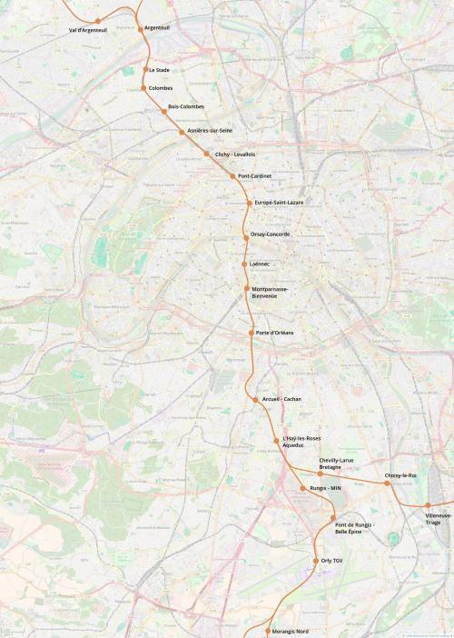

RER F Tronc commun
RER F Tronc commun
Argenteuil - Orly TGV
Création de la ligne F du RER.
Le nouveau RER F vise à créer un nouvel axe de transport rapide entre le nord-ouest et le sud-est de Paris.
Le tronc commun démarrerait à Argenteuil par le regroupement de la branche Persan avec les branches Boissy-l'Aillerie et Mantes-la-Jolie Le tracé vers Paris utiliserait les infrastructures de la ligne de Paris-Saint-Lazare à Mantes en desservant en particulier la gare de Pont-Cardinet.
À partir de cette gare une trémie permettrait aux trains de descendre vers une nouvelle gare, Europe-Saint-Lazare, souterraine et légèrement au nord de la gare Saint-Lazare, sous le carrefour de l'Europe. Cette dernière permettra de soulager le trafic de la gare Saint-Lazare tout en s'affranchissant du problème des quais courts que connait la gare principale.
Le tracé maintenant souterain passerait à l'ouest de la ligne 14 et rejoindrait la place de la Concorde avant de traverser la Seine à l'est du pont éponyme avec une station sous la Seine Orsay - Concorde en correspondance avec Musée d'Orsay et Concorde. Ensuite le tracé irait vers le sud pour rejoindre le pôle de Montparnasse-Bienvenüe via la gare de Laënnec dimensionnée pour servir de gare terminus pour les cas de perturbations ou d'évènements exceptionnels.
La sortie de Paris se ferait par la Porte d'Orléans puis en passant par Arcueil - Cachan, il traverserait la vallée de la Bièvre pour atteindre la gare de bifurcation de L'Haÿ-les-Roses - Aqueduc en correspondance avec la ligne 4 et la ligne 14. Après avoir laissé la branche Verneuil-l'Étang partir vers l'est, le tronc commun passerait par la gare routière du MIN de Rungis et contournerait le centre commercial de Belle Épine par l'est. Pour atteindre la gare du Pont de Rungis. L'itinéraire partagé avec le RER C dévié atteindrait ensuite Orly-TGV contournerait l'aérogare Orly-Ouest par le nord ou par le sud en fonction des sous-sols pour se diriger vers Morangis, point de séparation entre les branches Étampes et Lisses du RER F.
Voir les autres projets associés à cette ligne
Carte
{kind=link}

Cliquer pour agrandir
Stations
Si ce projet vous intéresse n'hésitez pas à le (re-)partagez sur les réseaux sociaux ou par courriel ou à en parler autour de vous.
Si vous souhaitez travailler à la concrétisation de ce projet, passez à l'action et contactez nous.
Commenter